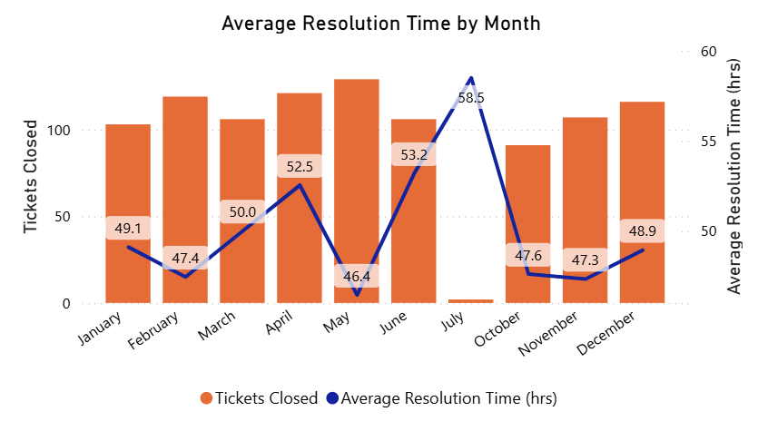

Average Resolution Time
Description
Average Resolution Time measures the typical time it takes to resolve a customer issue, service request, or support ticket. It is calculated by averaging the duration between when an issue is created and when it is marked as resolved. This KPI is crucial for monitoring customer service efficiency, identifying bottlenecks in service processes, and ensuring timely resolution of issues.
Visual Example

DAX Formula
Usage Notes
- Use this KPI with time-based visuals (e.g. trend lines by week or month) to track performance over time.
- Apply filters for ticket priority, category, or team to identify areas needing improvement.
- If resolution spans multiple days, consider displaying in hours or business hours for better granularity.
- Exclude unresolved tickets from the calculation or flag them separately.
- Use tooltips or drillthrough pages to explore individual tickets with long resolution times.